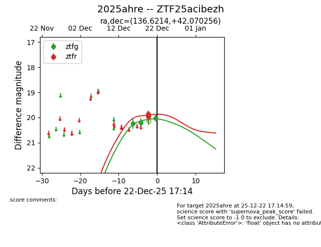
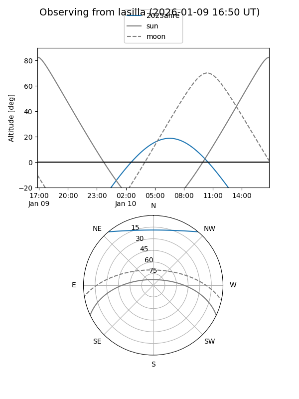
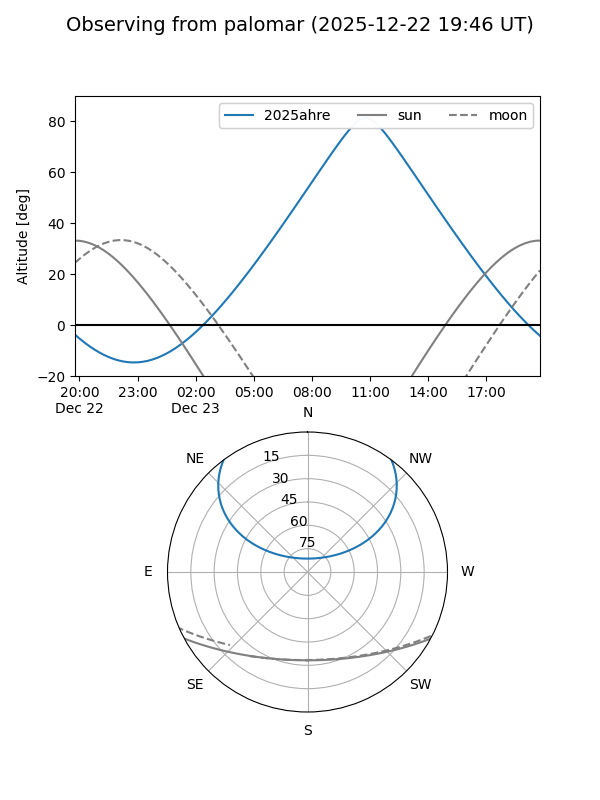

2025ahre
Target 2025ahre at 2025-12-31 18:00
Aliases and brokers:
FINK: link
Lasair: link
ALeRCE: link
TNS: link
YSE: link
alt names
ZTF25acibezh (ztf,fink_ztf)
2025ahre (tns,yse)
Coordinates:
equatorial (ra, dec) = 136.6214,+42.07026
equatorial (HMS+DMS) = 09:06:29.15,+42:04:12.92
galactic (l, b) = (179.4484,+42.27466)
Flags:
Photometry:
last ztfg=20.00, ztfr=19.69
6 ztfg, 4 ztfr detections
Lightcurve

Visibility


Additional plots